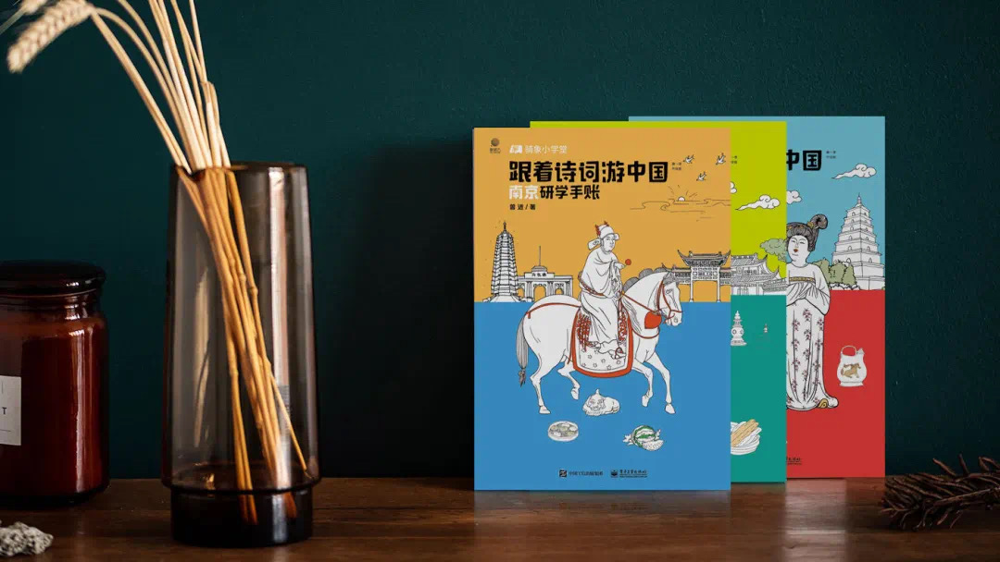
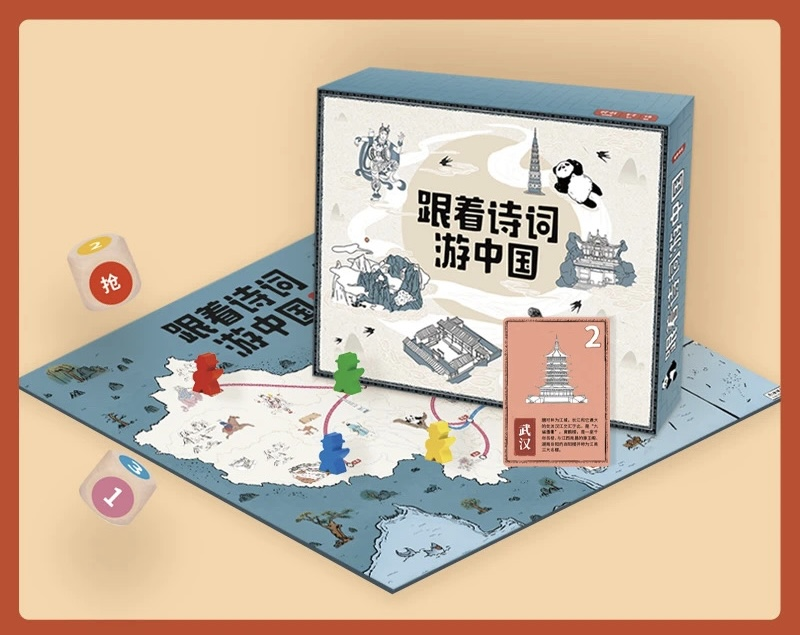
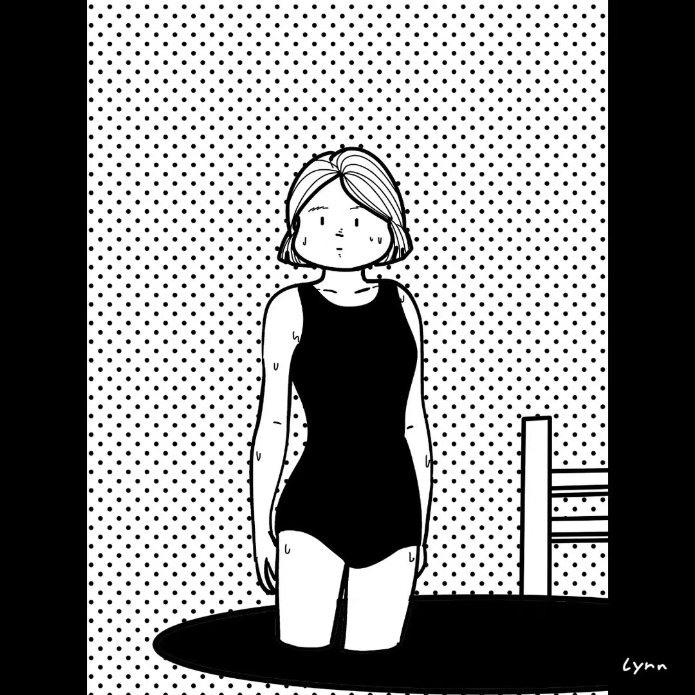
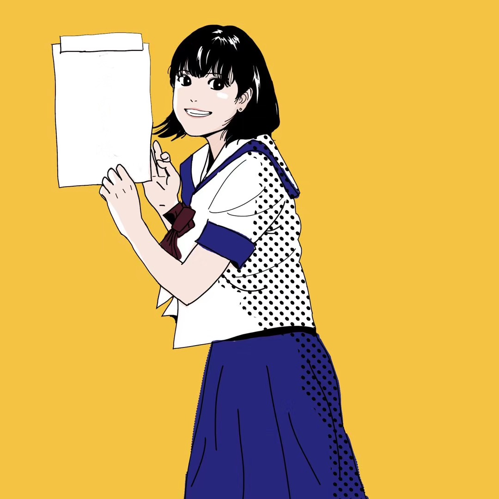
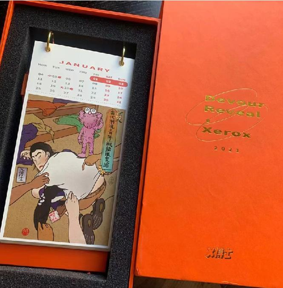
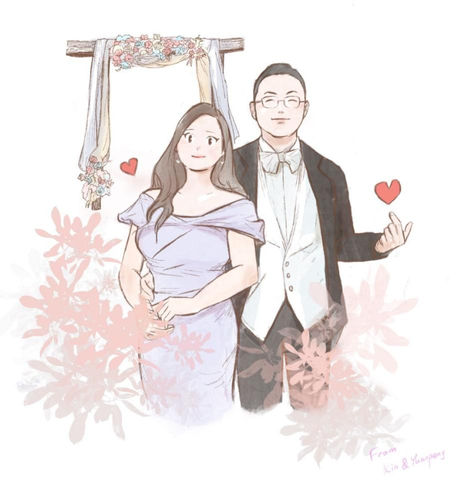
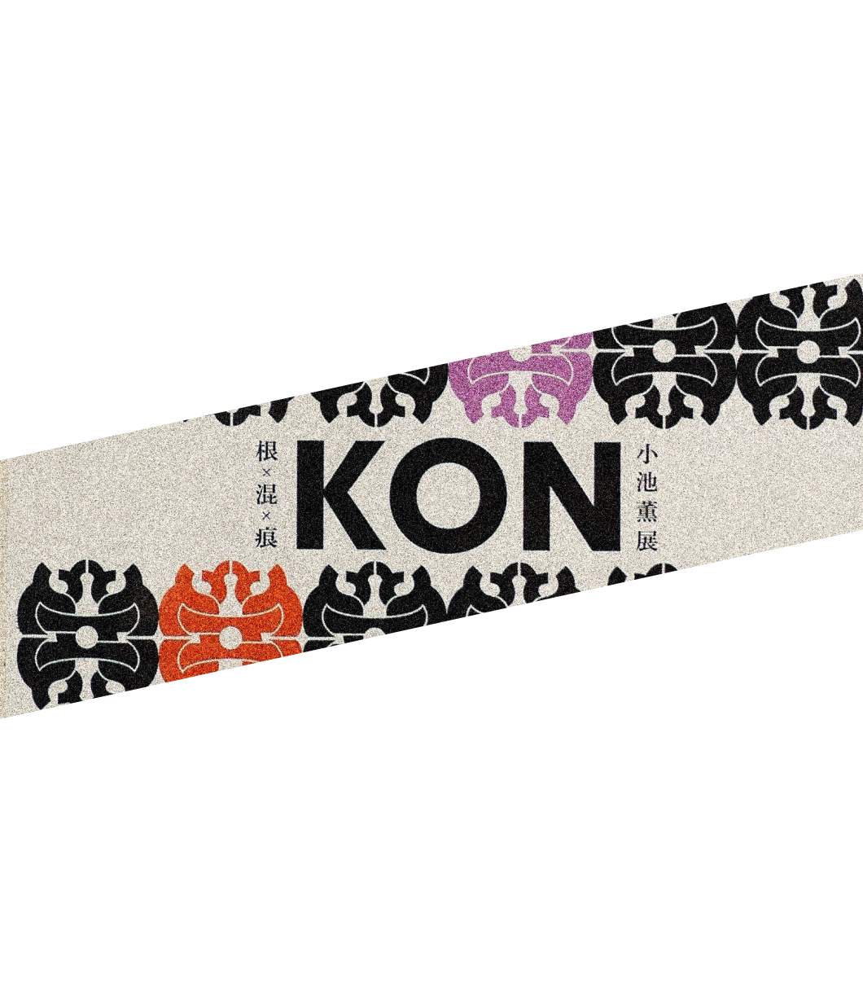
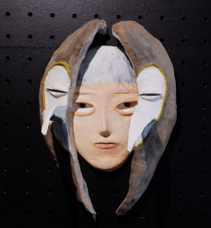

更多项目
这里收录出版物插画与跨媒介实验。
ARCHIVE / 01
出版物与编辑插画
参与《跟着诗词游中国》系列四册出版物的视觉制作，负责封面插图与书内插画，并将诗词、地域文化与旅行知识转化为更亲切的视觉叙事。


ARCHIVE / 02
插画与跨媒介实验
大学时期，我从漫画与角色插画、平面设计，逐步尝试黏土面具、空间展示与策展。在参与不同设计项目和校园活动的过程中，我持续积累跨媒介创作经验，也逐渐形成了对表达方式与材料细节的敏感。





